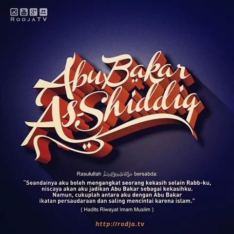

#1 Abu Bakar Ash-Shidiq
Maret 11, 2020Views : 3,487,497
'Abdullah bin Abu Quhafah atau yang lebih dikenal dengan Abu Bakar Ash-Shiddiq, adalah salah satu pemeluk Islam awal, salah satu sahabat utama Nabi, dan khalifah pertama sepeninggal Nabi Muhammad mangkat. Melalui putrinya, 'Aisyah, Abu Bakar merupakan ayah mertua Nabi Muhammad
Watch This
#3 ‘Alī bin Abī Thālib
Maret 11, 2020Views : 3,487,497
‘Alī bin Abī Thālib adalah khalifah keempat yang berkuasa pada tahun 656 sampai 661. Dia termasuk golongan pemeluk Islam pertama dan salah satu sahabat utama Nabi. Secara silsilah, 'Ali adalah sepupu dari Nabi Muhammad. Pernikahan 'Ali dengan Fatimah az-Zahra juga menjadikannya sebagai menantu Nabi Muhammad.
Watch This